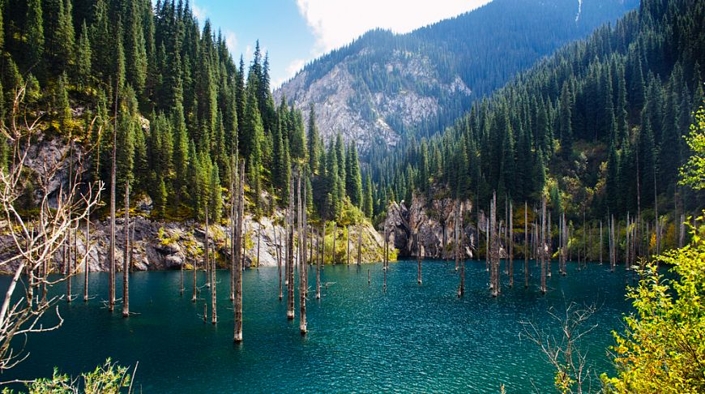
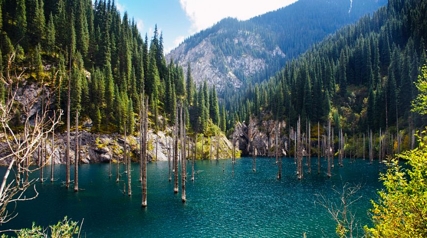

Сакральные места Казахстана
В день 30-летия независимости Казахстана
казахстан - необыкновенен
Что такое сакральные места?
Сакральные места – это широко известные среди населения Казахстана объекты культурного наследия, природные места, а также памятники связанные с политическими событиями страны. В Казахстане их много, и все они отличаются друг от друга, и все они особенные. Сакральные места бывают разные, на сакральной карте Казахстана: культурные, исторические, природные.
- Сакральных мест в Казахстане - 600
- Самая высокая гора Хан-Тенгри
- Самая глубокая впадина - Карагие
- Природных заповедников - 10
 


Бекет-Ата
url
Бекет-Ата
Подземная мечеть Бекет-Ата, расположенная на западе Казахстана, является одной из главных святынь региона. По древним сказаниям, Бекет-Ата обладал богатырской силой, что в том числе помогало выбивать мечети в крепких скалах. Бекет-ата известен как предсказатель и пророк, которому была открыта книга бытия.
Постройка расположилась в живописной долине, хорошо сохранившись до наших дней. Бывалые путешественники отмечают лишь труднодоступность объекта из-за плохой инфраструктуры.
Мавзолей Ходжа
Мавзолей Ходжи Ахмета Яссауи находится на территории государственного историко-культурного музея-заповедника "Азрет Султан". Мавзолей в 2003 году включен в список объектов Всемирного наследия ЮНЕСКО. На этой территории погребено около двух десятков казахских ханов, в том числе Абылай, Есим, Тауке, а также известные казахские бии и батыры.
Внешне симметричный, компактный план включает до 35 помещений, соединенных переходами, лестницами и коридорами, которые отходят от углов казандыка и членят помещение на восемь отсеков-блоков.
Городище Сауран
url
Городище СауранПервое упоминание о Сауране в письменных источниках относится к первой половине X века. Жизнь в крепости продолжалась вплоть до середины XVIII века. К XVII веку он был уже вымершим городом, и сегодня только его безмолвные стены говорят, что здесь был когда-то Сауран – крепость и торговый центр наших предков.
Со времени первого археологического обследования в специальной литературе Сауран понимается и описывается как отдельное городище, имеющее в плане вид овала и окруженное сравнительно хорошо сохранившимися крепостными.
Жаркент-ская мечеть
Жаркентская мечеть - центральная мечеть города Жаркент, памятник архитектуры XIX века. Мечеть была построена в 1895 году по проекту китайского архитектора Хон Пика.
Мечеть построена в стиле архитектуры Средней Азии. В 1969 году началось возрождение храма, были проведены инженерные изыскания, изучены особенности строительных конструкций и декора.
Кратер Жаманшин
url
Кратер ЖаманшинЖаманшин - геоморфологический метеоритный кратер в Иргизском районе Актюбинской области. В диаметре кратер достигает 10 километров, есть также менее выраженное внешнее кольцо. Возраст, вычисленный радиологическим методом, составляет 12 миллионов лет. Учёные предполагают, что по составу метеорит был каменным, поскольку обломков метеоритного железа в кратере и округе обнаружено не было.
Святое место «Улкен-Агаш»
Мистические место, где законы науки бессильны